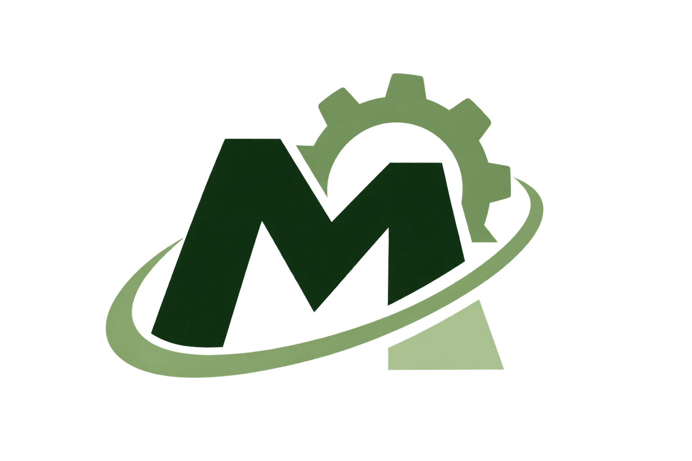
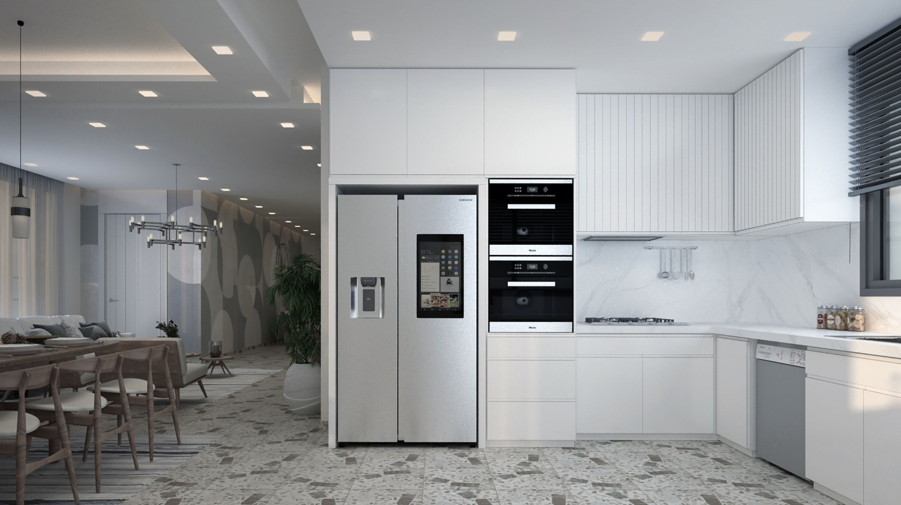
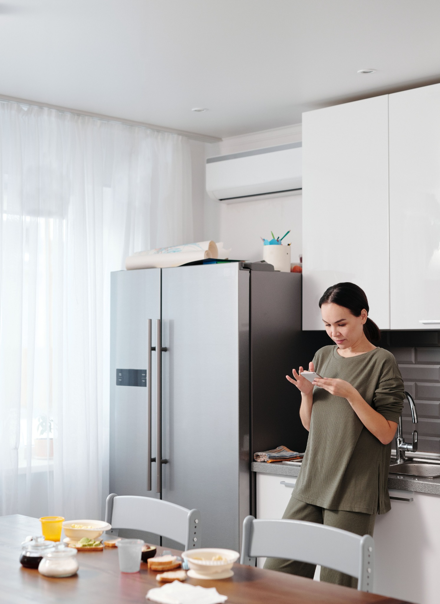
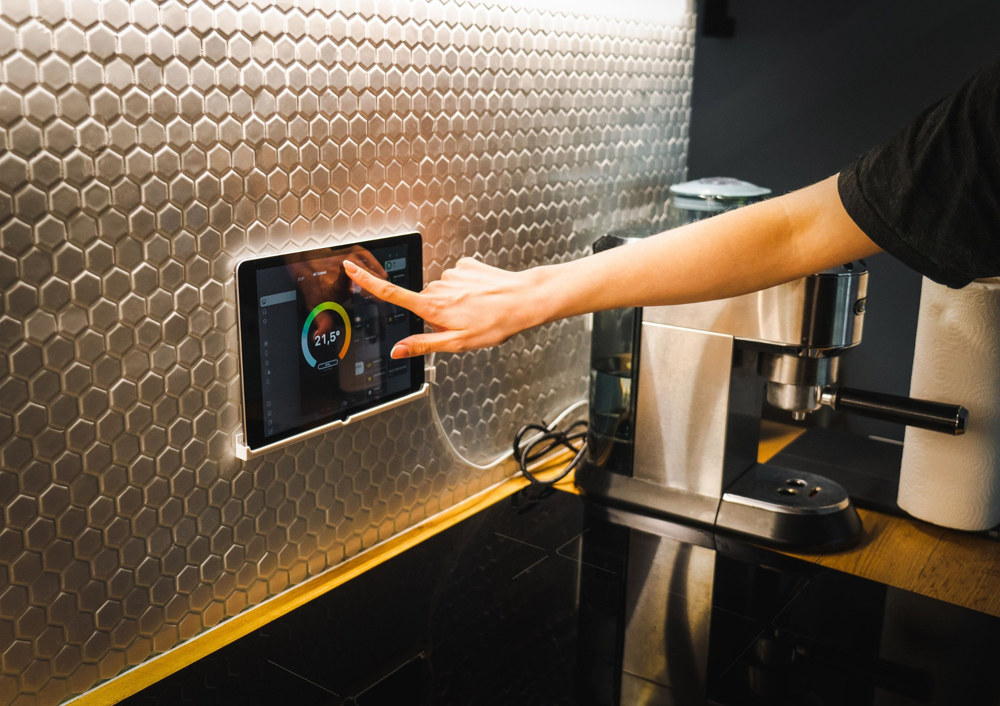
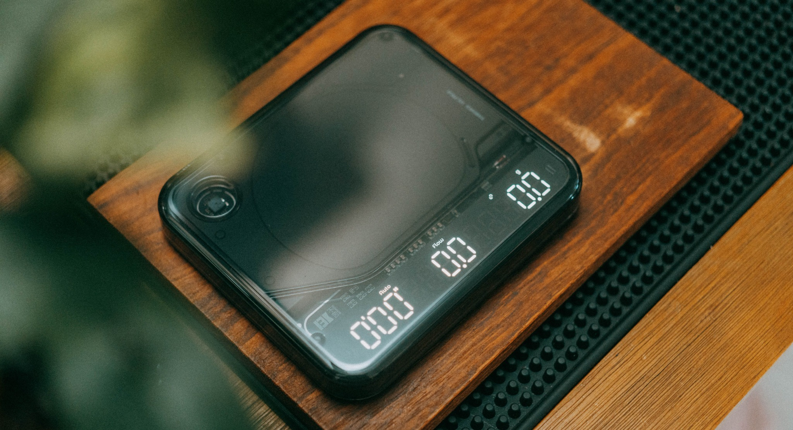
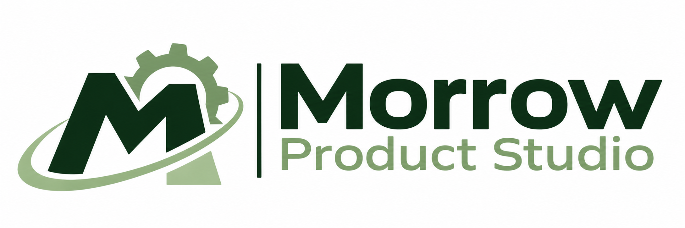

Understand
Listen to users, map pain points, and turn requirements into a clear design brief.
RESEARCH · USABILITY · REQUIREMENTS
MORROWPRODUCT STUDIODESIGN × ENGINEERING × PRODUCTION
We turn complex product challenges into intuitive experiences—and carry good ideas all the way from first sketch to factory floor.
See how we work ↗Fresh zone · Optimal
Beautiful form matters. So do accessible controls, dependable components, realistic costs, and a product people can actually build. We design for all of it.
01 / OUR APPROACH
Strategy, design, engineering, and manufacturing planning move together—so the experience we promise is the experience that ships.
Listen to users, map pain points, and turn requirements into a clear design brief.
RESEARCH · USABILITY · REQUIREMENTSExplore industrial design, interaction flows, controls, materials, and rapid prototypes.
UX/UI · ID · PROTOTYPINGTest with real users and refine for accessibility, technical fit, reliability, and cost.
VALIDATION · ENGINEERING · DFMPrepare specifications, supplier coordination, quality criteria, and production handoff.
SOURCING · QUALITY · LAUNCH02 / WHAT WE DO
A focused team and an extended manufacturing network, assembled around each product program—from launch through its life in the home.
OUR EXPERTISE
At Morrow, we help turn your ideas into real products, from the early design and prototyping stages all the way through full-scale production. We focus on building durable, reliable hardware that meets high standards for quality, safety, and performance. Our capabilities include hardware integration, component sourcing, assembly optimization, environmental testing, and final product testing. We use modern manufacturing methods and efficient production processes to make sure every product is built to last and meets all customer requirements. We work closely with our customers to understand their goals, solve challenges, and bring their ideas to life. We are committed to turning your engineering vision into practical, dependable hardware solutions that meet the needs of our customers.
At Morrow, we turn your ideas into real products, from the early design and prototyping stages all the way through full-scale production. We focus on building durable, reliable hardware that meets high standards for quality, safety, and performance. Our capabilities include hardware integration, component sourcing, assembly optimization, environmental testing, and final product testing. We use modern manufacturing methods and efficient production processes to make sure every product is built to last and meets all customer requirements. We work closely with our customers to understand their goals, solve challenges, and bring their ideas to life. We are committed to turning your engineering vision into practical, dependable hardware solutions that meet the needs of our customers.
At Morrow, we provide technical assistance, installation guidance, warranty service, and ongoing maintenance support. Customers can contact us through phone, email, and an online support page. Our response process prioritizes issues by urgency, so critical problems are resolved quickly and routine questions are not prioritized over critical ones. We also gather customer feedback after every interaction and feed it back to our design and manufacturing teams. We are committed to delivering support that is as dependable as the hardware we build.
03 / CASE STUDY CONCEPTS
Case studies of Morrow Studio consumer product work.


CONNECTED REFRIGERATORImagine a manufacturer building 100,000 refrigerators a year seeking a more useful consumer experience. The concept pairs accessible appliance controls with an app for temperature status, energy insights, care reminders, and service guidance.
The design brief extends through component sourcing, production readiness, and post-sale support.


COFFEE MACHINEA coffee-machine concept explores clear physical controls, useful connected settings, and feedback that helps people make a consistent cup without complicating the everyday routine.
It also considers reliable hardware, manufacturable parts, cleaning guidance, and support after the sale.
Photos from pexels.
04 / THE WHOLE PRODUCT LIFECYCLE
Translate design intent into specifications and supplier criteria. Coordinate sourcing, component availability, cost targets, production readiness, and quality checkpoints with manufacturing partners.
Design clear onboarding, in-app help, service flows, troubleshooting, and parts information. Bring customer feedback and field issues back into continuous product improvement.
OUR POINT OF VIEW
“The best product experience is the one that still works beautifully when it leaves the prototype lab.”
— Morrow studio principle (fictional)
05 / LET’S BEGIN

Bring us the challenge, the constraints, and the ambition. We’ll help frame a practical path from insight to production.
Discuss a project ↗Demonstration link only · Replace with team contact before use